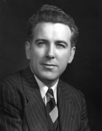

Please note: the AAS Obituaries are temporarily being hosted on this website while their full content is being ingested into the PubPub publishing platform newly adopted by the Bulletin of the American Astronomical Society. When the migration is complete, your existing links will take you to the final, migrated content. Contact peter.williams@aas.org with any questions.
James Gilbert Baker (1914-2005)
Dr. James Gilbert Baker, renowned astronomer and optical physicist, died 29 June 2005 at his home in Bedford, New Hampshire at the age of 90. Although his scientific interest was astronomy, his extraordinary ability in optical design led to the creation of hundreds of optical systems that supported astronomy, aerial reconnaissance, instant photography (Polaroid SX70 camera), and the US space programs. He was the recipient of numerous awards for his creative work.
He was born in Louisville, Kentucky, on 11 November 1914, the fourth child of Jesse B. Baker and Hattie M. Stallard. After graduating from Louisville DuPont Manual High, he went on to attend the University of Louisville majoring in Mathematics. He became very close to an Astronomy Professor, Dr. Moore, and many times used his telescopes to do nightly observations. While at the university, he built mirrors for his own telescopes and helped form the Louisville Astronomical Society in 1933. At the University of Louisville, he also met his future wife, Elizabeth Katherine Breitenstein of Jefferson County, Kentucky. He received his BA in 1935 at the height of the Depression.
He began his graduate work in astronomy at the Harvard College Observatory. After his MA (1936), he was appointed a Junior Fellow (1937-1943) in the Prestigious Harvard Society of Fellows. He received his PhD in 1942 from Harvard in rather an unusual fashion, which is worth retelling. During an Astronomy Department dinner, Dr. Harlow Shapley (the director) asked him to give a talk. According to the "Courier-Journal Magazine", "Dr. Shapley stood up and proclaimed an on-the-spot departmental meeting and asked for a vote on recommending Baker for a Ph.D. on the basis of the 'oral exam' he had just finished. The vote was unanimous." It was at Harvard College Observatory during this first stage of his career that he collaborated with Donald H. Menzel, Lawrence H. Aller, and George H. Shortley on a landmark set of papers on the physical processes in gaseous nebulae. In addition to his theoretical work, he also began designing astronomical instruments with ever greater resolving powers and wide-angle acceptance which he described as the "the royal way to new discoveries." 1 He is well known for the Baker-Schmidt telescope and the Baker Super Schmidt meteor camera. He was also a co-author with George Z. Dimitroff of a book entitled, "Telescopes and Accessories" (1945). In 1948 he received an Honorary Doctorate from the University of Louisville.
With the start of World War II, the U.S. Army sought to establish an aerial reconnaissance branch and placed the project in charge of Colonel George W. Goddard. After months of searching for an optical designer, he asked for a recommendation from Dr. Mees 2 of Eastman Kodak. Following the recommendations of Dr. Mees, Col. Goddard found this friendly and unassuming twenty-six year old graduate student at Harvard to be the perfect candidate. He was impressed by Dr. Baker's originality in optical design and provided him a small army research contract in early 1941 for a wide-angle camera system. Goddard's "Victory Lens" project began on 20 May 1942 when he visited Dr. Baker's office at Harvard College Observatory and described the need for a lens of f/2.5 covering a 5x5 plate to be made in huge quantities." Multiple designs were developed during the war effort. A hands-on man, Dr. Baker risked his life operating the cameras in many of the early test flights that carried the camera systems in unpressurized compartments on aircraft. He was the director of the Observatory Optical Project at Harvard University from 1943 to 1945. He began his long consulting career with the Perkin Elmer Corporation during this period. When the war ended, Harvard University decided to cease war-related projects and subsequently, Dr. Baker's lab was moved to Boston University and was eventually spun off as ITEK Corporation. However, he continued to be an associate professor and research associate at Harvard from 1946 to 1949. In 1948 he received the Presidential Medal for Merit for his work during World War II in the Office of Scientific Research and Development.
In 1948, he moved to Orinda, California from Cambridge, Massachusetts and became a research associate of Lick Observatory for two years. He returned to Harvard in 1950. He had spent thousands of hours doing ray trace calculations on a Marchant calculator to produce his first aerial cameras. To replace the tedious calculations by hand, Dr. Baker introduced the use of numerical computers into the field of optics. His ray-trace program was one of the first applications run on the Harvard Mark II (1947) computer. Later on, he developed his own methodology to optimize the performance of his optical designs. These optical design computer programs were a family affair, developed under his direction by his own children to support his highly sophisticated designs of the 1960s and 1970s.
For most of his career, Dr. Baker was involved with large system concepts covering not only the camera, but the camera delivery systems as well. As the chairman of U.S. Air Force Scientific Advisory Board, he recognized that national security requirements would require optical designs of even greater resolving power using aircraft at extreme altitudes. The need for such a plane resulted in the creation of the U-2 system consisting of a plane and camera functioning as a unit to create panoramic high-resolution aerial photographs. He formed Spica Incorporated in 1955 to perform the necessary optical design work for the US Government. The final design was a 36-inch f/10 system. Dr. Baker also designed the aircraft's periscope to allow the pilot to see his flight path. By 1958, he was almost solely responsible for all the cameras used in photoreconnaissance aircraft. He continued to serve on the President's Foreign Intelligence Advisory Board and on the Land Panel.
Before the launch of Sputnik, he designed the Baker-Nunn satellite-tracking camera to support the Air Force's early satellite tracking and space surveillance networks. Because of his foresight, cameras were in place to track the Sputnik Satellite in October 1957. These cameras allowed the precise orbital determination of all orbiting spacecraft for over three decades until the tracking cameras were retired from service.
He continued to advise top Government officials in the evolution of reconnaissance systems during the 1960s and 1970s. He received a Space Pioneer Award from the US Air Force. He received the Pioneers of National Reconnaissance Medal (2000) with the citation, "As a young Harvard astronomer, Dr. James G. Baker designed most of the lenses and many of the cameras used in aerial over flights of 'denied territory' enabling the success of the U.S. peacetime strategic reconnaissance policy."
Around 1968, he undertook a consulting contract with Polaroid Corporation after Dr. Edwin Land persuaded him that only he could design the optical system for his new SX-70 Land. He was also responsible for the design of the Quintic focusing system for the Polaroid Spectra Camera system that employed a revolutionary combination of non-rotational aspherics to achieve focusing function.
In 1958 he became a Fellow of the Optical Society of America (OSA). In 1960 he was elected President of the Society for one year and helped establish the Applied Optics Journal. He was the recipient of numerous OSA awards, spanning the breadth of the field, and has been honored with the Adolf Lomb Award, Ives Medal, Fraunhofer Award, and Richardson Award. He was made an honorary member of OSA in 1993. He also was the recipient of the 1978 Gold Medal, the highest award of the International Society of Optical Engineers (SPIE). Furthermore, he was the Recipient of the Elliott Cresson Medal of the Franklin Institute for his many innovations in astronomical tools.
Dr. Baker was elected a Member of the National Academy of Sciences (1965), the American Philosophical Society (1970), the American Academy of Arts and Sciences (1946), and the National Academy of Engineering (1979). He was a member of the American Astronomical Society, the International Astronomical Union, and the Astronomical Society of the Pacific. He authored numerous professional papers and has over fifty US patents. He maintained his affiliation with the Harvard College Observatory and the Smithsonian Astrophysical Observatory until he retired in 2003. Even after his retirement in 2003, he continued work at his home on a new telescope design that he told his family he should have discovered in 1940.
Light was always his tool to the understanding of the Universe. An entry from his personal observation log, 7 January 1933, made after an evening of star gazing reveals the pure inspiration of his efforts: "After all, it is the satisfaction obtained which benefits humanity, more than any other thing. It is in the satisfaction of greater human knowledge about the cosmos that the scientist is spurred on to greater efforts." James Baker fulfilled the destiny he had foreseen in 1933, living to see professional and amateur astronomers use his instruments and designs to further the understanding of the cosmos. Whereas, he had not predicted that his cameras would protect this nation for over many years.
He is survived by his wife, his four children and five grandchildren.
1 Oscar Bryant, "Astronomical Designs," in "Accent", the University of Louisville College of Arts and Sciences Alumni Newsletter, Spring 1994.
2 George W. Goddard,Brigadier General, "Overview", 273.
Obituary written by: Neal K. Baker (National Oceanic and Atmospheric Administration)
BAAS Citation: BAAS, 2005, 37, 1545
SAO/NASA ADS Bibcode: 2005BAAS...37.1545B